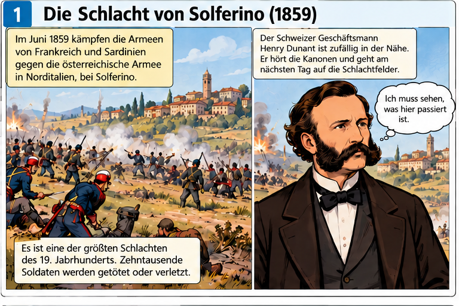
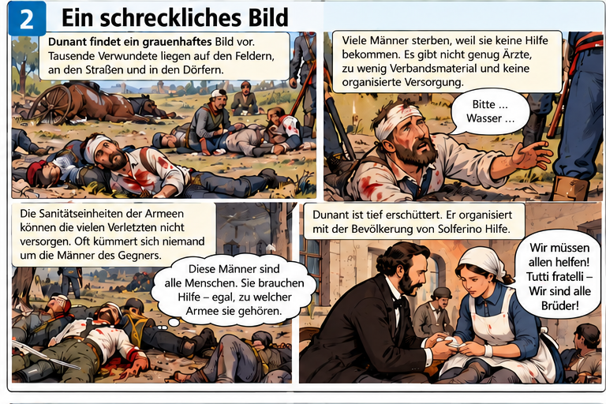
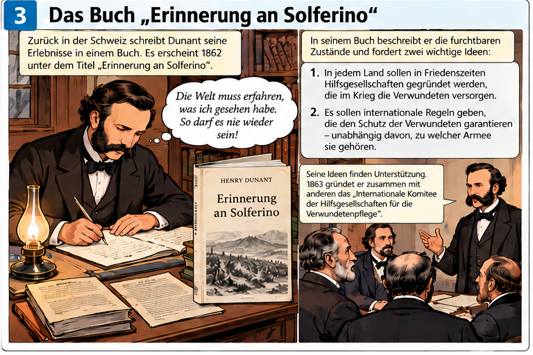
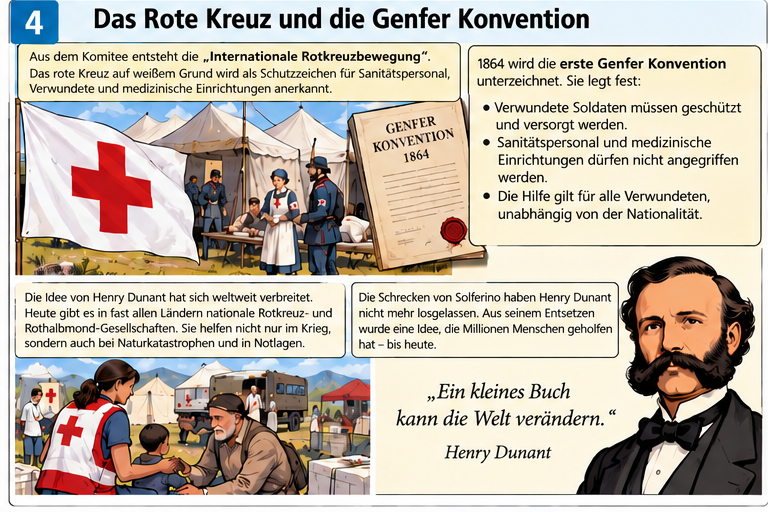

Lesen Sie die Bildgeschichte. Sehen Sie sich alle vier Bilder genau an. Bearbeiten Sie danach die beiden Aufgaben.




Aufgabe 1 – Richtig oder falsch?
Lesen Sie die Aussagen. Entscheiden Sie jeweils, ob die Aussage richtig oder falsch ist. Klicken Sie danach auf Antworten überprüfen.
Aufgabe 2 – Schlüsselwörter zuordnen
Ordnen Sie jedem Begriff die passende Erklärung zu. Wählen Sie dazu in jedem Dropdown-Menü einen Buchstaben aus der gemischten Wortliste. Sie können Ihre Antworten nach der Überprüfung verbessern.
Erklärungen (gemischt)